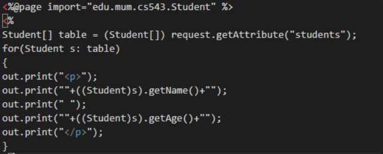

- Rewrite the JSP page in the first demo (forEach) to use scripting instead of the JSTL forEach.

- How do custom tags relate to JSTL?
When we create a Custom tag we are creating a new tag with a new prefix and uri like the JSTL but
out of the JSP standard Library, The Library and The TLD files will be attached with our project but
it has the same funcionality and Behavior with the JSTL
- What is the role of the URI in the TLD and the taglib directive?
The web container uses URI while validating the tags, which will tell the web container where the
actual TLD file is located.
- What is a tag handler class?
A class that Handles the actual actions of the Tag is a tag handle. It has attributes that will be used by
the tag in the JSP then this handlerClass will return a formatted output for the place it is called. To
set Values to the attributes, The SimpleTagSupport class will call the Setter methods for each
attribute that are generated during the initialization of the tag.
- What is the role of attribute setters in a tag handler class?
It will set the values that are passed from the jsp page code and the SimpleTagSupport class will set
the values and call the setter method for each attribute value, this will make the attributes ready for
the doTag() method.
- What is the role of the doTag() method in a tag handler class?
The doTag() method also is managed by the SimpleTagSupport calss and takes the values that are set
by the the attribute Setter methods and generate a formatted output to the appropriate place it is
call. Shortly, it is called from JSP servlet to render custom tag
-
What does the operation getJspContext().getOut().write("Hi Bob") do when called in a doTag() method?
The Hi Bob words in the Jsp content will be printed to the place the tag is used with the appropriate
attributes, but for all the attributes the method will always return the same output, because it is not
using the values from the setter methods
- What does the operation getJspBody().invoke(null) do when called in a doTag() method?
It Executes the fragment and directs all output to the given Writer in the body passed in by the
container via setJspBody(), or the JspWriter returned by the getOut() method of the JspContext
associated with the fragment if out is null.